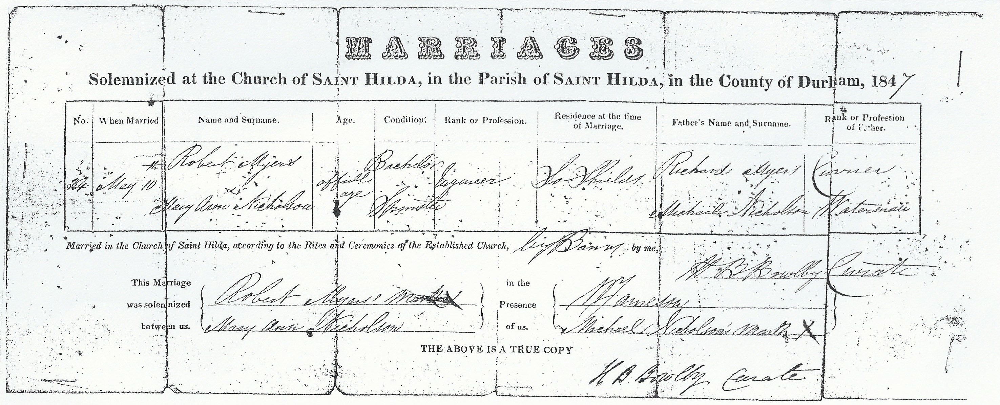

Mary Ann Myers (née Nicholson) 1827 - c1886
[ Home ] | [ Calendar ] | [ Surnames Index ] | [ Errors ] | [ Family History ]The child of Michael Nicholson (a grocer) and Isabella Briscoe, Mary Nicholson was born in North Shields, Tyne and Wear, England on 24 Jul 18271,2,3 and married Robert Myers (an engine man with whom she had 6 children: Mary, Isabella J N, Thomas Nicholson, Ann, Henry Briscoe Nicholson and Robert, along with 2 surviving children) at St Hilda's Church, South Shields, Tyne and Wear, England on 9 May 18475.
During her life, she was living at Quay, Blyth, Tyne and Wear on 30 Mar 18516; and at North Street in North Shields on 7 Apr 18611.
She died c. Aug 1886 in Tynemouth, Tyne and Wear, England4.
Parents
- Michael was born in 1796
- Isabella was born in 1796
Children
- Mary was born in 1848
- Thomas Nicholson was born c. Nov 1851
- Henry Briscoe Nicholson was born c. Feb 1856
- Robert was born c. May 1861
Citations
- 1861 England, Wales & Scotland Census - Findmypast (was age 34 and the wife of the head of the household)
- England & Wales Non-Conformist Births And Baptisms - Findmypast
- England Births & Baptisms 1538-1975 - Findmypast
- England & Wales deaths 1837-2007 - Findmypast
- England Marriages 1538-1973 - Findmypast
- 1851 England, Wales & Scotland Census - Findmypast (was age 25 and the wife of the head of the household)
Media
Mary Ann Nicholson

Robert Myers Mary Ann Nicholson - Marriage Certifi

England & Wales marriages 1837-2005 - BMD/M/1847/2/HZ/000458/021
England Marriages 1538-1973 - R_855397328/2
England Marriages 1538-1973 - R_848638324/2
Northumberland and Durham Marriages - GBPRS/M/356116375/3
1861 England, Wales & Scotland Census - GBC/1861/0019580311
England & Wales deaths 1837-2007 - BMD/D/1886/3/AZ/000239/147
Family Tree

Map
Generated by ged2site. Last updated on Jul 3, 2024
Known Issues
Can't find relationship with the home person
Mar 30, 1851: not living at same address as spouse Robert Myers ('Quay, Blyth, Tyne and Wear, England'/'Quay, Tynemouth, Tyne and Wear, England')
Listed in the residence for 7 Apr 1861, but spouse Robert Myers is not